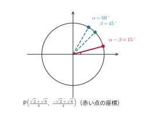
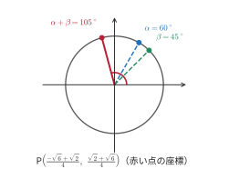
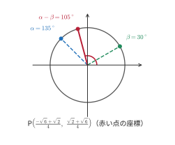

別冊練習問題 1 の解答 特殊角の和・差による値
(1) 加法定理を用いて、\(\sin15^\circ,\ \cos15^\circ,\ \tan15^\circ\) の値を求めよ。
角を特殊角の和（差）にする
\[15^\circ=60^\circ-45^\circ\]単位円で見ると、\(15^\circ\) の動径は、\(60^\circ\) の動径を \(45^\circ\) 分だけ戻したもの。点 \(P\) の座標が \((\cos15^\circ,\ \sin15^\circ)\)。

\(\sin\) の加法定理
\[\sin15^\circ=\sin60^\circ\cos45^\circ-\cos60^\circ\sin45^\circ=\dfrac{\sqrt{3}}{2}\cdot\dfrac{\sqrt{2}}{2}-\dfrac{1}{2}\cdot\dfrac{\sqrt{2}}{2}=\dfrac{- \sqrt{2} + \sqrt{6}}{4}\]\(\cos\) の加法定理
\[\cos15^\circ=\cos60^\circ\cos45^\circ+\sin60^\circ\sin45^\circ=\dfrac{1}{2}\cdot\dfrac{\sqrt{2}}{2}+\dfrac{\sqrt{3}}{2}\cdot\dfrac{\sqrt{2}}{2}=\dfrac{\sqrt{2} + \sqrt{6}}{4}\]\(\tan\) の加法定理
\[\tan15^\circ=\dfrac{\tan60^\circ-\tan45^\circ}{1+\tan60^\circ\tan45^\circ}=\dfrac{\sqrt{3}-1}{1+\sqrt{3}\cdot1}=- \sqrt{3} + 2\]【答案】
\[\sin15^\circ=\dfrac{- \sqrt{2} + \sqrt{6}}{4},\ \cos15^\circ=\dfrac{\sqrt{2} + \sqrt{6}}{4},\ \tan15^\circ=- \sqrt{3} + 2\]答
(2) 加法定理を用いて、\(\sin105^\circ,\ \cos105^\circ,\ \tan105^\circ\) の値を求めよ。
角を特殊角の和（差）にする
\[105^\circ=60^\circ+45^\circ\]単位円で見ると、\(105^\circ\) の動径は、\(60^\circ\) の動径を \(45^\circ\) 分だけ進めたもの。点 \(P\) の座標が \((\cos105^\circ,\ \sin105^\circ)\)。

\(\sin\) の加法定理
\[\sin105^\circ=\sin60^\circ\cos45^\circ+\cos60^\circ\sin45^\circ=\dfrac{\sqrt{3}}{2}\cdot\dfrac{\sqrt{2}}{2}+\dfrac{1}{2}\cdot\dfrac{\sqrt{2}}{2}=\dfrac{\sqrt{2} + \sqrt{6}}{4}\]\(\cos\) の加法定理
\[\cos105^\circ=\cos60^\circ\cos45^\circ-\sin60^\circ\sin45^\circ=\dfrac{1}{2}\cdot\dfrac{\sqrt{2}}{2}-\dfrac{\sqrt{3}}{2}\cdot\dfrac{\sqrt{2}}{2}=\dfrac{- \sqrt{6} + \sqrt{2}}{4}\]\(\tan\) の加法定理
\[\tan105^\circ=\dfrac{\tan60^\circ+\tan45^\circ}{1-\tan60^\circ\tan45^\circ}=\dfrac{\sqrt{3}+1}{1-\sqrt{3}\cdot1}=-2 - \sqrt{3}\]【答案】
\[\sin105^\circ=\dfrac{\sqrt{2} + \sqrt{6}}{4},\ \cos105^\circ=\dfrac{- \sqrt{6} + \sqrt{2}}{4},\ \tan105^\circ=-2 - \sqrt{3}\]答
(3) 加法定理を用いて、\(\sin105^\circ,\ \cos105^\circ,\ \tan105^\circ\) の値を求めよ。
角を特殊角の和（差）にする
\[105^\circ=135^\circ-30^\circ\]単位円で見ると、\(105^\circ\) の動径は、\(135^\circ\) の動径を \(30^\circ\) 分だけ戻したもの。点 \(P\) の座標が \((\cos105^\circ,\ \sin105^\circ)\)。

\(\sin\) の加法定理
\[\sin105^\circ=\sin135^\circ\cos30^\circ-\cos135^\circ\sin30^\circ=\dfrac{\sqrt{2}}{2}\cdot\dfrac{\sqrt{3}}{2}+ \dfrac{\sqrt{2}}{2}\cdot\dfrac{1}{2}=\dfrac{\sqrt{2} + \sqrt{6}}{4}\]\(\cos\) の加法定理
\[\cos105^\circ=\cos135^\circ\cos30^\circ+\sin135^\circ\sin30^\circ=- \dfrac{\sqrt{2}}{2}\cdot\dfrac{\sqrt{3}}{2}+\dfrac{\sqrt{2}}{2}\cdot\dfrac{1}{2}=\dfrac{- \sqrt{6} + \sqrt{2}}{4}\]\(\tan\) の加法定理
\[\tan105^\circ=\dfrac{\tan135^\circ-\tan30^\circ}{1+\tan135^\circ\tan30^\circ}=\dfrac{-1-\dfrac{\sqrt{3}}{3}}{1-1\cdot\dfrac{\sqrt{3}}{3}}=-2 - \sqrt{3}\]【答案】
\[\sin105^\circ=\dfrac{\sqrt{2} + \sqrt{6}}{4},\ \cos105^\circ=\dfrac{- \sqrt{6} + \sqrt{2}}{4},\ \tan105^\circ=-2 - \sqrt{3}\]答